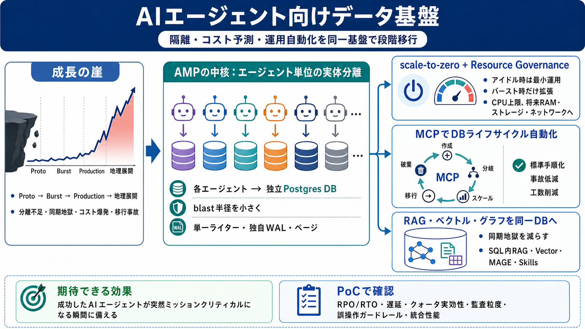

A PostgreSQL Database for Every Agent | Yugabyte
# A PostgreSQL Database for Every Agent. PostgreSQL Built for Agent Fleets: Vector, In-Database RAG, Graph, Multitenancy…

AI時代の“データ基盤”
AIエージェントの普及に合わせて、隔離・コスト予測・運用自動化を進めるPostgreSQL互換分散DBの考え方を整理します。
成長の崖（growth cliff）
小さく始めたDBは、普及（バースト）するとスケールや運用・移行が破綻しやすくなります。
隔離で“爆発範囲”を縮める
アプリ/顧客分離では不十分な場面で、AMPは“エージェント”を分離単位にして影響範囲を小さくします。
AMPのコア：エージェント分離
AMPは各エージェントに“独立したPostgresデータベース”を付与し、密度と隔離を両立させる方針です。
サーバレス起動：scale-to-zero
サーバレス的にscale-to-zeroで開始し、必要時だけ起動・拡張できる設計を強調しています。
コストはスケール前に壊れる
エージェントは増えるだけでなくアイドルも多いのに、従来DBは容量課金になりがちです。
運用のMCP化：作成〜廃棄
クエリ実行だけでなく、Provisioning/Branching/Scaling/Migration/TeardownまでをMCP呼び出しで操作します。
RAG/ベクトル/グラフを同一DBへ
分離サービス構成では、埋め込み・メタデータの同期や障害切り分けが重くなります。
ブランチで検証を安全に
DB Branchingは実験用途が中心になりがちですが、エージェントの書き込み負荷でも劣化しにくいことを強調しています。
透明性：監査と運用アドバイザ
意思決定トレース／監査証跡（Meko）や、専用DBエージェント（Architect / Voyager / Perf Advisor）で自律運用の説明可能性を補強します。
読んだ上での評価と注意
魅力は大きい一方で、実測ベンチ、失敗ケース、権限・承認の具体、統合の性能/ストレージコストは抜粋だけでは判断できません。
要点まとめ
成功したAIエージェントが“突然ミッション・クリティカル”になる瞬間に備え、分散・地理分散・可用性・コスト・運用を同一基盤で段階的に進めます。
# A PostgreSQL Database for Every Agent. PostgreSQL Built for Agent Fleets: Vector, In-Database RAG, Graph, Multitenancy…
# YugabyteDB Architecture. YugabyteDB is a distributed SQL database, so its architecture is different than the ones empl…
# YugabyteDB Architecture: Diverse Workloads with Operational Simplicity. YugabyteDB is a transactional, high performanc…
Discover **Meko:** The Data Infrastructure for Agents That Work and Learn Together. # YugabyteDB: Distributed PostgreSQL…
In this article, I'll demonstrate the two-layer architecture of Yugabyte's distributed PostgreSQL database and how it is…